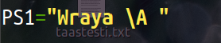
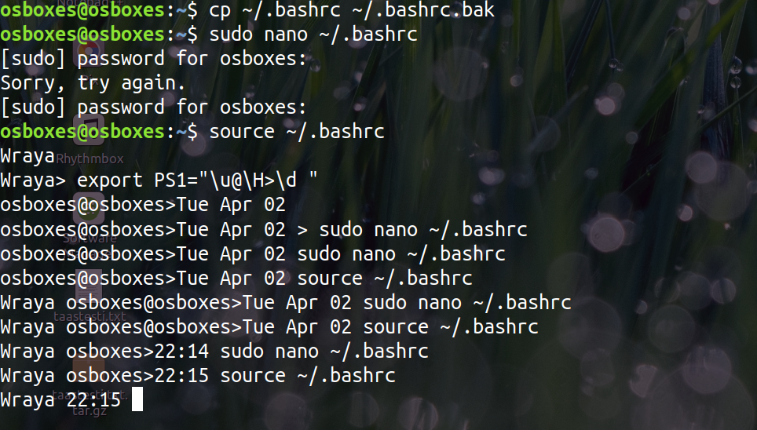

Etsin netistä ohjeen komentorivikehotteen muuttamiseksi. Luonnollisesti suositteli ensin varmuuskopion tekemistä tiedostosta. Kokeilin, kunnes sain vain oman määritellyn käyttäjänimen ja kellonajan. Tein nämä muutokset tiedostoon, joten ne ovat pysyviä. Todennäköisesti poistan tuon kellonajan, mutta oma käyttäjänimi saisi jäädä.

b) Tietokoneen nimi, käytössä oleva komentorivitulkki ja versio